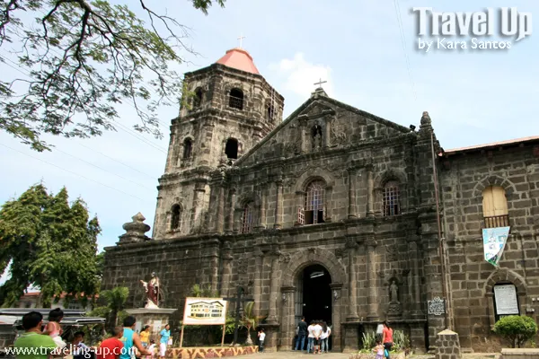
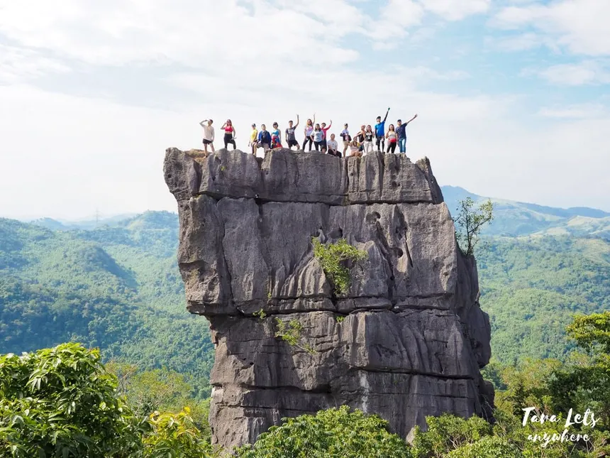
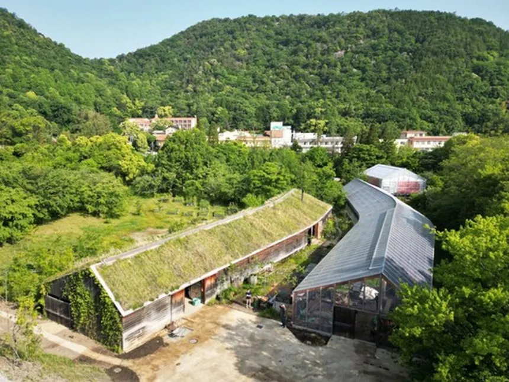
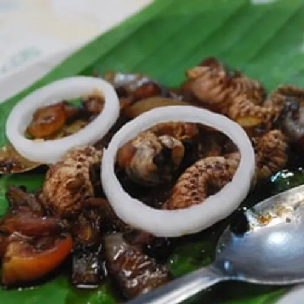
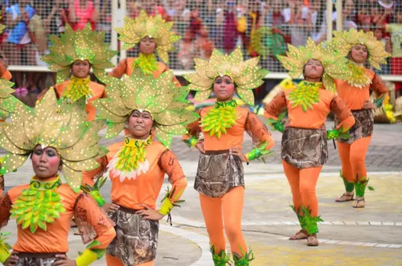

RELIGIOUS CULTURE
• The people of Tanay are mostly Catholic and celebrate church traditions.
• Pilgrimages like Regina Rica are common.
• The people of Tanay are mostly Catholic and celebrate church traditions.
• Pilgrimages like Regina Rica are common.


• Known for hiking, camping, and river adventures.
• Tourists visit places like Daranak Falls.
• Many locals live through farming and small businesses.
• Fresh products are part of daily life.


• Known for home-cooked Filipino dishes.
• Visitors enjoy local eateries and scenic dining.
• Festivals show unity and creativity of people.
• Celebrations include parades and giant figures.
